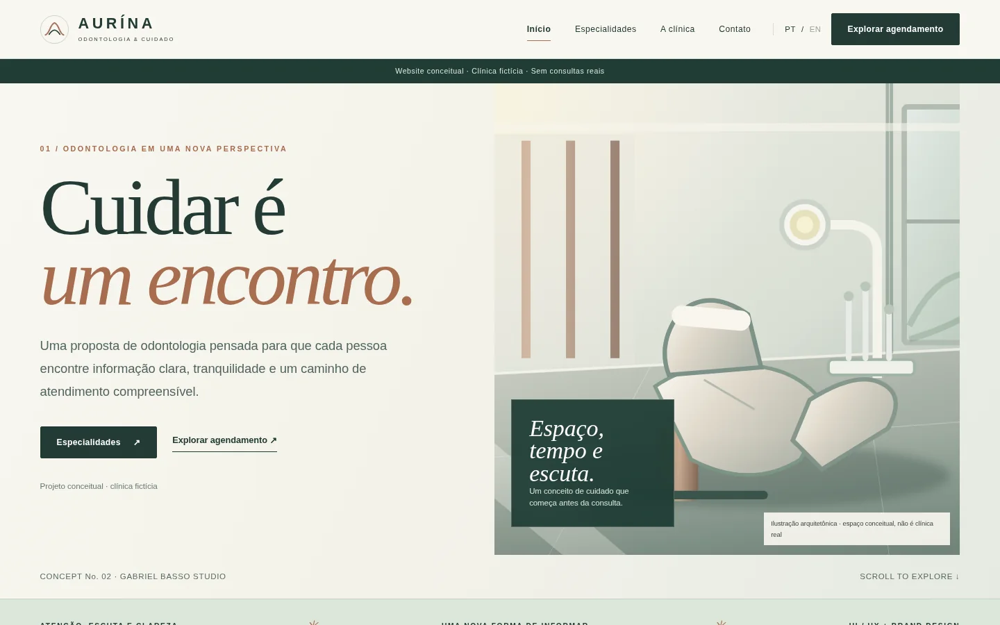

Linguagem serena
Textos explicam possibilidades e limites, em vez de prometer transformações.
Estudo de caso / 02 — 04
Odontologia · Experiência institucional
Cuidado explicado com calma e clareza.
Um website para uma clínica odontológica conceitual, com conteúdo orientado ao paciente e um fluxo demonstrativo de agendamento.

Quem procura atendimento odontológico precisa entender especialidades, saber o que esperar e encontrar uma forma simples de dar o próximo passo. A proposta organiza essas informações sem promessas de resultados e sem tratar decisões de saúde como uma compra impulsiva.
Pessoas em busca de informações gerais sobre cuidados odontológicos e sobre o processo de avaliação profissional.
Identidade, sete especialidades, páginas educativas e agendamento demonstrativo.
Brand Design / Web Design / UX
A identidade evita clichês visuais do setor. Formas arquitetônicas suaves, verde mineral e cobre criam proximidade sem perder precisão. A tipografia e a organização por blocos favorecem a leitura de assuntos que exigem atenção.
O verde mineral sustenta a identidade; o cobre dá acolhimento; o fundo claro oferece uma leitura confortável.
 01 — Direção visual
01 — Direção visualTextos explicam possibilidades e limites, em vez de prometer transformações.
Cada tema tem uma página com descrição, orientações e perguntas frequentes.
O visitante pode revisar suas escolhas antes de concluir a simulação.
Explorar a proposta e as especialidades.
Ler orientações gerais e perguntas frequentes.
Selecionar especialidade, perfil conceitual, data e horário.
Conferir as informações e finalizar uma simulação.
A navegação combina uma homepage institucional, páginas explicativas e um percurso progressivo de agendamento, sem exigir dados sensíveis.

Um website para uma clínica odontológica conceitual, com conteúdo orientado ao paciente e um fluxo demonstrativo de agendamento.
Explorar a experiênciaConteúdo geral organizado por tema e perguntas frequentes.
Datas e horários podem ser explorados na demonstração.
Etapas claras e validação antes da confirmação demonstrativa.
Sem credenciais fictícias apresentadas como reais ou promessas de resultados.
A AURÍNA demonstra como organizar conteúdo institucional e solicitação de avaliação de forma acolhedora. A clínica, sua equipe e o calendário são conceituais; nenhuma consulta real é marcada.
Sobre as imagens. Ilustrações arquitetônicas representam ambientes conceituais, não instalações de uma clínica real.
Próximo projeto / 03 — 04
ORÍVIA